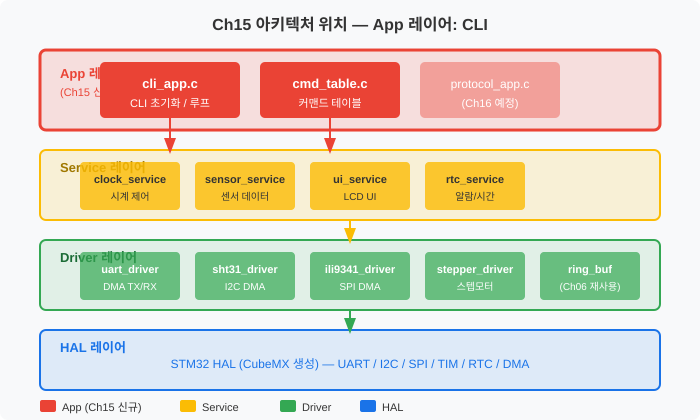
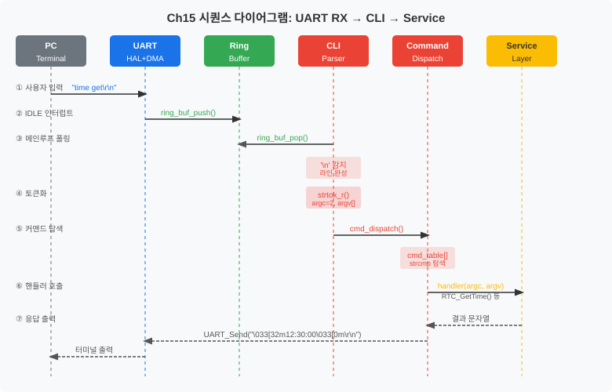
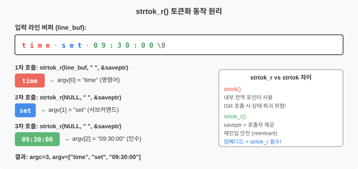
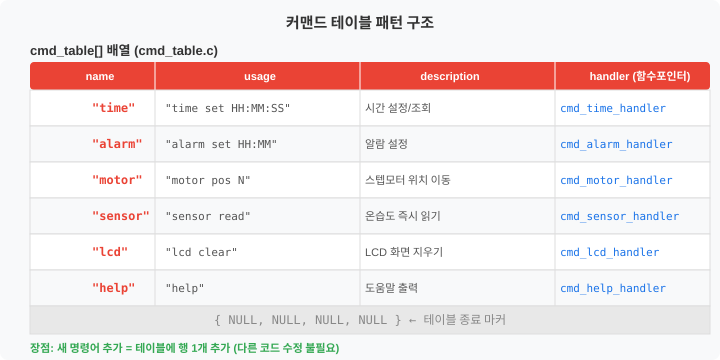
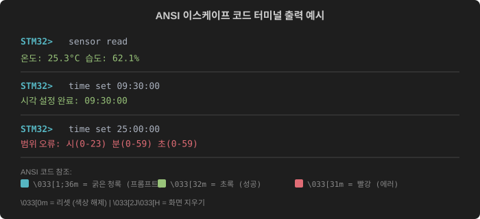
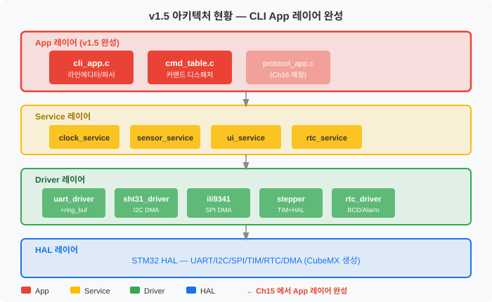

터미널에서 명령어를 타이핑하면 스마트 시계 전체가 움직인다 — 링 버퍼 기반 비동기 CLI 완성
Ch04부터 쌓아 온 Driver 레이어와 Service 레이어 위에 드디어 App 레이어가 완성됩니다.
CLI(Command Line Interface)는 사용자와 시스템 사이의 관문 역할을 하며,
cli_app.c와 cmd_table.c 두 파일이 App 레이어를 구성합니다.

CLI App 레이어가 외부에 노출하는 공개 API는 두 가지입니다. 나머지는 내부 구현 세부사항이며, Service 레이어의 기존 API를 호출합니다.
/* cli_app.h — 공개 인터페이스 */
/**
* @brief CLI 초기화 — Ring Buffer + UART 핸들 연결
* @param rx_buf Ch06 ring_buf_t 포인터 (UART DMA RX가 채워 넣음)
* @param huart 응답 출력에 사용할 UART 핸들
*/
void CLI_Init(ring_buf_t *rx_buf, UART_HandleTypeDef *huart);
/**
* @brief CLI 폴링 — 슈퍼루프(while(1))에서 매 사이클 호출
* @note Ring Buffer에서 문자를 꺼내 라인 완성 시 파서/디스패처 실행
*/
void CLI_Process(void);
사용자가 터미널에서 명령어를 입력하면, UART DMA 수신 → Ring Buffer 저장 → CLI 폴링 감지 → 파서 → 커맨드 테이블 조회 → Service 호출의 순서로 처리됩니다.

이 챕터를 완료하면 다음을 할 수 있습니다.
strtok_r() 기반 명령어 파서를 구현하고 time set/get, sensor read 명령어가 동작하도록 커맨드 테이블을 작성할 수 있다.switch-case 방식 대비 유지보수성에서 유리한 이유를 설명할 수 있다.time set/get, alarm set,
motor pos, sensor read, lcd clear 명령어로 시스템 전체를 제어할 수 있습니다.
Ch04에서 UART Driver를 만들고, Ch06에서 링 버퍼를 추가했습니다. 이제 그 위에 "사람이 명령을 입력하면 시스템이 반응하는" 인터페이스를 구축할 차례입니다. 이것이 CLI(Command Line Interface, 명령줄 인터페이스)입니다.
레이어드 아키텍처(Ch03)에서 각 레이어의 역할을 다시 떠올려 보겠습니다.
CLI는 사용자 입력을 받아 Service를 호출하는 역할이므로 App 레이어입니다. 이 원칙을 지키면 나중에 CLI 대신 PC 대시보드(Ch16)나 터치스크린으로 교체하더라도 Service 레이어는 전혀 수정하지 않아도 됩니다.
Ch06에서 구현한 ring_buf_t는 UART DMA 수신과 메인 루프 사이의 데이터 버퍼로 사용했습니다.
CLI는 이 링 버퍼를 그대로 재사용합니다. 새 코드를 작성하는 것이 아니라, 기존 부품을 조립하는 것입니다.
/* main.c — CLI 초기화 (기존 ring_buf + huart2 재활용) */
extern ring_buf_t g_uart_rx_buf; /* Ch06에서 선언된 링 버퍼 */
int main(void)
{
HAL_Init();
SystemClock_Config();
MX_USART2_UART_Init();
LOG_I("시스템 초기화 완료 (v1.5)");
/* Ch06 링 버퍼 + huart2 를 CLI에 연결 */
CLI_Init(&g_uart_rx_buf, &huart2);
while (1)
{
/* CLI 폴링 — Ring Buffer 에 새 문자가 있으면 처리 */
CLI_Process();
/* 기존 Service 루프 */
Clock_Service_Task();
Sensor_Service_Task();
UI_Service_Task();
}
}
사용자가 time set 09:30:00을 입력하면, 이 문자열을 어떻게 분해해서
"명령어는 time, 서브커맨드는 set, 인수는 09:30:00"이라는 정보로 만들까요?
이 과정이 파싱(Parsing, 구문 분석)입니다.
C 표준 라이브러리의 strtok()은 내부에 전역 정적 포인터를 사용합니다.
이 말은 ISR(인터럽트 서비스 루틴)에서 strtok()을 호출하면
메인 루프의 strtok() 상태가 파괴된다는 뜻입니다.

strtok_r()은 상태 포인터 saveptr를 호출자가 제공합니다.
따라서 두 개의 파서가 동시에 동작해도 각자의 상태를 독립적으로 관리합니다.
임베디드 환경에서는 항상 strtok_r()을 사용하십시오.
CLI의 첫 번째 단계는 Ring Buffer에서 문자를 꺼내 라인 버퍼(s_line_buf)에 조립하는 것입니다.
개행 문자(\n 또는 \r)가 감지되면 라인이 완성된 것으로 판단합니다.
/* cli_app.c — Ring Buffer에서 라인 조립 (CLI_Process 핵심 부분) */
void CLI_Process(void)
{
uint8_t byte;
/* Ring Buffer 에서 모든 바이트를 처리 */
while (ring_buf_pop(s_rx_buf, &byte) == RING_BUF_OK)
{
/* 백스페이스: 마지막 문자 삭제 */
if (byte == '\b' || byte == 0x7F)
{
if (s_line_len > 0)
{
s_line_len--;
s_line_buf[s_line_len] = '\0';
CLI_Printf("\b \b"); /* 터미널 문자 지우기 */
}
continue;
}
/* 개행 감지 → 라인 완성 */
if (byte == '\n' || byte == '\r')
{
if (s_line_len == 0)
{
CLI_Printf("\r\n" CLI_PROMPT);
continue;
}
s_line_buf[s_line_len] = '\0';
CLI_Printf("\r\n");
LOG_D("CLI 라인 수신: '%s'", s_line_buf);
cli_parse_and_dispatch(s_line_buf); /* 파서 + 디스패처 */
s_line_len = 0;
memset(s_line_buf, 0, sizeof(s_line_buf));
CLI_Printf(CLI_PROMPT);
continue;
}
/* 일반 문자: 에코 + 버퍼 추가 */
if (s_line_len < CLI_LINE_MAX - 1)
{
s_line_buf[s_line_len++] = (char)byte;
CLI_Printf("%c", byte); /* 로컬 에코 */
}
}
}
/* cli_app.c — strtok_r 기반 파서 */
static void cli_parse_and_dispatch(char *line)
{
char *argv[CLI_ARGV_MAX];
int argc = 0;
char *saveptr; /* strtok_r 의 상태 포인터 — 재진입 안전 */
char *token;
/* 공백/탭을 기준으로 토큰화 */
token = strtok_r(line, " \t", &saveptr);
while (token != NULL && argc < CLI_ARGV_MAX)
{
/* argv 배열은 line_buf 내 토큰 시작 주소(포인터)를 저장합니다 — 복사가 아님 */
argv[argc++] = token;
token = strtok_r(NULL, " \t", &saveptr);
}
if (argc == 0)
{
return; /* 공백만 입력한 경우 */
}
LOG_D("파싱 완료: argc=%d argv[0]='%s'", argc, argv[0]);
/* 커맨드 테이블에 디스패치 */
cmd_dispatch(argc, argv);
}
명령어가 늘어날 때 가장 단순한 방법은 if-else if 또는 switch-case입니다.
하지만 명령어가 10개, 20개가 되면 이 코드는 수백 줄의 단일 함수로 비대해집니다.
커맨드 테이블(Command Table) 패턴은 이 문제를 우아하게 해결합니다.

/* cmd_table.h — 커맨드 테이블 타입 정의 */
/* 1단계: 함수 포인터 타입을 typedef로 단순화 */
typedef int (*cmd_handler_t)(int argc, char *argv[]);
/*
* int (*cmd_handler_t)(int argc, char *argv[]) 읽는 법:
* cmd_handler_t는 int를 반환하고 (int argc, char *argv[])를
* 인수로 받는 함수를 가리키는 포인터 타입이다.
*/
/* 2단계: 엔트리 구조체 정의 */
typedef struct
{
const char *name; /* 명령어 이름 — "time", "sensor" 등 */
const char *usage; /* 사용법 문자열 */
const char *description; /* 한 줄 설명 */
cmd_handler_t handler; /* 핸들러 함수 포인터 */
} cmd_entry_t;
/* cmd_table.c — 테이블 정의 */
static const cmd_entry_t s_cmd_table[] =
{
{ "time", "time get | time set HH:MM:SS", "시각 조회/설정", cmd_time_handler },
{ "alarm", "alarm set HH:MM", "알람 설정", cmd_alarm_handler },
{ "motor", "motor pos N", "모터 이동", cmd_motor_handler },
{ "sensor", "sensor read", "온습도 읽기", cmd_sensor_handler },
{ "lcd", "lcd clear", "LCD 초기화", cmd_lcd_handler },
{ "help", "help", "도움말", cmd_help_handler },
{ "ver", "ver", "버전 출력", cmd_ver_handler },
{ NULL, NULL, NULL, NULL } /* 종료 마커 — 반드시 마지막에 */
};
/* 디스패처: 테이블을 순회하며 이름 일치 항목의 핸들러 호출 */
void cmd_dispatch(int argc, char *argv[])
{
const cmd_entry_t *entry = s_cmd_table;
while (entry->name != NULL)
{
if (strcmp(entry->name, argv[0]) == 0)
{
LOG_D("커맨드 '%s' 발견 → 핸들러 호출", entry->name);
int ret = entry->handler(argc, argv);
if (ret != 0)
{
CLI_Printf("\033[31m[ERR] 명령 실패 (ret=%d)\r\n사용법: %s\r\n\033[0m",
ret, entry->usage);
LOG_W("커맨드 '%s' 실패: ret=%d", entry->name, ret);
}
return;
}
entry++;
}
/* 미등록 명령어 */
CLI_Printf("\033[31m알 수 없는 명령어: '%s'\r\n\033[0m도움말: 'help' 입력\r\n",
argv[0]);
LOG_W("미등록 명령어: '%s'", argv[0]);
}
핸들러 함수의 역할은 단순합니다. 인수를 검증하고, Service 레이어의 함수를 호출하고, 결과를 터미널에 출력합니다. CLI 핸들러에는 비즈니스 로직이 없어야 합니다. 로직은 Service 레이어에 있습니다.
/* cmd_table.c — time 명령어 핸들러 */
int cmd_time_handler(int argc, char *argv[])
{
if (argc < 2)
{
return -1; /* 서브커맨드 없음 — 디스패처가 usage 출력 */
}
/* "time get" 처리 */
if (strcmp(argv[1], "get") == 0)
{
RTC_TimeTypeDef time;
if (RTC_GetTime(&time) != HAL_OK)
{
LOG_E("RTC_GetTime 실패");
return -2;
}
CLI_Printf("\033[32m현재 시각: %02d:%02d:%02d\r\n\033[0m",
time.Hours, time.Minutes, time.Seconds);
LOG_I("time get: %02d:%02d:%02d",
time.Hours, time.Minutes, time.Seconds);
return 0;
}
/* "time set HH:MM:SS" 처리 */
if (strcmp(argv[1], "set") == 0)
{
if (argc < 3) { return -1; }
/* sscanf 로 HH:MM:SS 파싱 */
/* %d 사용: newlib-nano 환경에서 %hhu 지원이 불안정할 수 있음 */
int h_i, m_i, s_i;
if (sscanf(argv[2], "%d:%d:%d", &h_i, &m_i, &s_i) != 3)
{
CLI_Printf("\033[31m형식 오류: HH:MM:SS 로 입력하세요\r\n\033[0m");
return -3;
}
uint8_t h = (uint8_t)h_i;
uint8_t m = (uint8_t)m_i;
uint8_t s = (uint8_t)s_i;
if (h > 23 || m > 59 || s > 59)
{
CLI_Printf("\033[31m범위 오류: 시(0-23) 분(0-59) 초(0-59)\r\n\033[0m");
return -4;
}
if (RTC_SetTime(h, m, s) != HAL_OK)
{
LOG_E("RTC_SetTime 실패");
return -5;
}
CLI_Printf("\033[32m시각 설정 완료: %02d:%02d:%02d\r\n\033[0m", h, m, s);
LOG_I("time set: %02d:%02d:%02d", h, m, s);
return 0;
}
return -1; /* 알 수 없는 서브커맨드 */
}
/* cmd_table.c — sensor read 핸들러 */
int cmd_sensor_handler(int argc, char *argv[])
{
if (argc < 2 || strcmp(argv[1], "read") != 0)
{
return -1;
}
float temp = 0.0f, humi = 0.0f;
if (Sensor_ReadNow(&temp, &humi) != HAL_OK)
{
CLI_Printf("\033[31m센서 읽기 실패 — SHT31 연결을 확인하세요\r\n\033[0m");
LOG_E("Sensor_ReadNow 실패");
return -2;
}
CLI_Printf("\033[32m온도: %.1f°C 습도: %.1f%%\r\n\033[0m", temp, humi);
LOG_I("sensor read: T=%.1f H=%.1f", temp, humi);
return 0;
}
/* cmd_table.c — motor pos 핸들러 */
int cmd_motor_handler(int argc, char *argv[])
{
if (argc < 3 || strcmp(argv[1], "pos") != 0)
{
return -1;
}
int32_t steps = (int32_t)atoi(argv[2]);
CLI_Printf("\033[33m스텝모터 이동: %ld 스텝 (%s)\r\n\033[0m",
(long)steps, steps >= 0 ? "시계방향(CW)" : "반시계방향(CCW)");
if (Motor_SetPosition(steps) != HAL_OK)
{
LOG_E("Motor_SetPosition 실패: %ld 스텝", (long)steps);
return -2;
}
LOG_I("motor pos: %ld 스텝 이동 완료", (long)steps);
return 0;
}
지금까지 구현한 CLI는 기능적으로는 완성되었지만, 모든 출력이 같은 색상의 텍스트입니다. 성공 메시지와 에러 메시지를 시각적으로 구분하면 사용성이 크게 향상됩니다. ANSI 이스케이프 코드(ANSI Escape Code)를 사용하면 단 몇 바이트로 색상과 서식을 제어할 수 있습니다.
<span style="color:red">와 같습니다.
터미널이 이해하는 특별한 제어 문자열을 데이터 스트림에 삽입하면,
터미널 에뮬레이터가 그 부분을 색상 명령으로 해석합니다.

/* cli_app.h — ANSI 이스케이프 코드 매크로 */
#define ANSI_RED "\033[31m" /* 에러 — 빨간색 */
#define ANSI_GREEN "\033[32m" /* 성공 — 초록색 */
#define ANSI_YELLOW "\033[33m" /* 경고 — 노란색 */
#define ANSI_CYAN "\033[36m" /* 정보 — 청록색 */
#define ANSI_BOLD "\033[1m" /* 굵게 */
#define ANSI_RESET "\033[0m" /* 모든 속성 초기화 */
/* 프롬프트: 굵은 청록색 "STM32> " */
#define CLI_PROMPT "\033[1;36mSTM32>\033[0m "
/* 사용 예시 */
/* CLI_Printf(ANSI_GREEN "성공\r\n" ANSI_RESET); */
/* CLI_Printf(ANSI_RED "실패\r\n" ANSI_RESET); */
/* ANSI 화면 제어 */
/* 화면 전체 지우기 + 커서를 좌상단으로 이동 */
CLI_Printf("\033[2J\033[H");
/* 현재 줄 지우기 */
CLI_Printf("\033[2K\r");
/* 커서 이동: 행 5, 열 1로 이동 */
CLI_Printf("\033[5;1H");
/* 실무에서 자주 쓰는 패턴: 고정 위치 상태 표시줄 갱신 */
CLI_Printf("\033[1;1H" /* 커서를 1행 1열로 */
"\033[2K" /* 현재 줄 지우기 */
"상태: %s\r\n", /* 새 내용 출력 */
status_str);
ANSI 이스케이프 코드는 VT100 호환 터미널에서만 정상 동작합니다. 다음 터미널을 권장합니다.
목표: cli_app.c + cmd_table.c를 프로젝트에 통합하고,
터미널에서 time get, sensor read, motor pos 512 명령어를 실행한다.
환경: STM32CubeIDE, NUCLEO-F411RE, USART2 (PA2/PA3), PuTTY 또는 Windows Terminal
STM32CubeIDE에서 Core/Src/에 cli_app.c, cmd_table.c를 추가하고,
Core/Inc/에 cli_app.h, cmd_table.h를 추가합니다.
프로젝트 Properties → C/C++ Build → Settings → Include Paths에 경로가 포함되어 있는지 확인합니다.
/* main.c */
#include "cli_app.h"
#include "ring_buf.h" /* Ch06 링 버퍼 */
extern ring_buf_t g_uart_rx_buf; /* Ch06 에서 선언 */
int main(void)
{
/* ... HAL_Init, 클럭, 주변장치 초기화 ... */
LOG_I("STM32 스마트 시계 v1.5 시작");
/* CLI 초기화 — Ch06 링 버퍼 재사용 */
CLI_Init(&g_uart_rx_buf, &huart2);
while (1)
{
CLI_Process(); /* CLI 폴링 (비블로킹) */
Clock_Service_Task();
Sensor_Service_Task();
UI_Service_Task();
}
}
PuTTY를 Serial 모드로 열고, 포트는 NUCLEO-F411RE의 COM 포트, Baud Rate는 115200, 8-N-1로 설정합니다. 연결 후 Reset 버튼을 누르면 다음과 같은 배너가 출력됩니다.
=== STM32 Smart Clock CLI v1.5 ===
'help' 입력 후 Enter 로 명령어 목록 확인
STM32> 다음 명령어들을 순서대로 입력하며 동작을 확인합니다.
STM32> help
=== 사용 가능한 명령어 ===
time time get | time set HH:MM:SS
alarm alarm set HH:MM
motor motor pos N
sensor sensor read
lcd lcd clear
...
STM32> time set 09:30:00
시각 설정 완료: 09:30:00
STM32> time get
현재 시각: 09:30:03
STM32> sensor read
온도: 25.3°C 습도: 62.1%
STM32> motor pos 512
스텝모터 이동: 512 스텝 (시계방향(CW))
STM32> time set 25:00:00
범위 오류: 시(0-23) 분(0-59) 초(0-59)
ring_buf_t를 재사용하여 UART DMA 비동기 수신과 메인 루프 폴링을 분리했습니다. 누적 성장의 핵심입니다.strtok_r()은 strtok()과 달리 전역 상태를 갖지 않으므로 임베디드 다중 컨텍스트 환경에서 안전합니다.
이 챕터 완료 후 cli_app.c, cmd_table.c가 App 레이어에 추가되었습니다.
4계층 레이어드 아키텍처(HAL → Driver → Service → App)가 완성되었습니다.

strtok_r()을 사용하는 이유를 설명하십시오.
strtok()와의 차이점(전역 상태, 재진입 안전성)을 중심으로 서술하십시오.
{ NULL, NULL, NULL, NULL } 종료 마커의 역할을 설명하고,
이 마커를 빠뜨렸을 때 발생하는 현상을 예측하십시오.
log level N 명령어를 추가하십시오.
N이 0이면 ERROR 레벨만, 3이면 DEBUG까지 모두 출력하도록
cmd_log_handler()를 구현하십시오. (Ch02 로그 레벨 필터링 변수 활용)
time set 09:30:00을 입력하는 동안
SHT31 센서 DMA 완료 인터럽트가 발생하여 Sensor_Service_Task()가 실행됩니다.
이 상황에서 CLI 파서가 사용하는 strtok_r()의 saveptr가
영향을 받는지 여부와 그 이유를 설명하십시오.